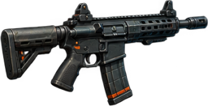
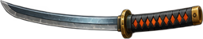

F
／
Z
FINGERTIP
指尖僵尸
SURVIVAL / 01
声效 开
单人生存行动
SECTOR 07 / 23:48
THE CITY IS LOST. YOU AREN’T.
指尖
僵尸
FINGERTIP ZOMBIES
穿过尸潮，活着抵达黎明。
01
最后的街区
隔离区 · 雨夜街道
05:00
坚守时间
PREPARE FOR DEPLOYMENT
准备出击
幸存者
装备
01
选择幸存者
3 名可用
ϟ
02
选择装备
战斗中可切换枪械
渡鸦
LV. 1
00:00
Ⅱ
＋
100 / 100
第 1 波
击杀
0
0
连杀
感染源 · 暴君

突击步枪
30 / 30
点击换枪
Q
↻
换弹
移动 · 转向
⊕
长按攻击
J

近战
SPACE
ϟ
超载
E